The Autoindexing Interface is used to autoindex the diffraction images and generate data collection strategies that optimize data completeness (both unique and anomalous) for all the possible space groups.
The interface consist of a navigation tree in the left frame and a detail view in the right frame. The user will be able to save any number of autoindexing runs and select a particular run to view its results and settings.
All runs are displayed in the navigation tree in the left frame. The tree consists of a root node named "Runs". All runs are sub nodes of the "Runs" node. The right frame displays information pertaining the selected node in the navigation tree. For example, when "Runs" node is selected, the right frame will display a summary of all runs.
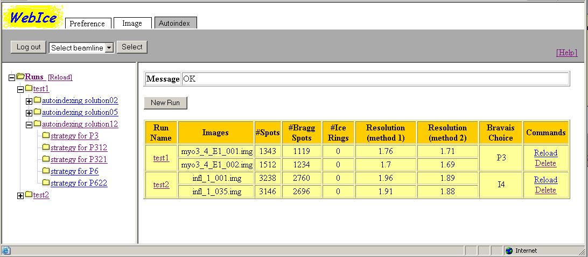
Each node in the tree is represented by an icon displaying a closed or opened folder, and a text which is the node name. Additionally, if a node has at least one child node, there is also an icon displaying a plus or minus symbol. The in above picture, test1 node does not have any child node, whereas test2 and test5 nodes do. The user can click on the plus icon to expand the node so that child nodes become visible. Conversely, the user can click the minus icon to collapse the node so that the child nodes become invisible. The opened folder to the left of the node name indicates that the node has been selected. There can only be one selected node at a time. Un-selected nodes are displayed with the closed folder icon. The user selects a node by clicking on the node name. Additionally, when a node is selected the node name is drawn with a bold font. In the picture above, "Runs" node is selected.
Child nodes of "Runs" node represent the runs that the user has created. The run name reflects the directory name where files generated for this run is saved. Generally, a run directory is saved under /data/userid/webice/strategy/Runs directory. For example, a run called "test1" for joeuser will be created as /data/joeuser/webice/strategy/Runs/test1. See the Preference section to find out how to change the root directory for saving WebIce data.
When a run is completed successfully, the run directory will contain several output files generated by the autoindexing process. In some runs (depending on the run options), sub directories will be created for each autoindexing solution for which the integration was carried out. These solutions are represented in the navigation trees as child nodes of the run node. The corresponding directory is named as as solutionNN where NN is a solution number. In the example above, directory for solution 7 will be created as /data/joeuser/webice/strategy/Runs/test1/solution07.
Again, depending on the run options, WebIce may also create data collection strategies (oscillation range and maximum oscillation per diffraction frame) for each solution mentioned above. The result for each point group is saved in a sub directory created under the solution directory. The sub directory is named after the lattice and point group, for example, /data/joeuser/webice/strategy/Runs/test1/solution07/I4 and /data/joeuser/webice/strategy/Runs/test1/solution07/I422. In the navigation tree, it is represented by a node under the solution node.
The user can view the summary of all runs by selecting the "Runs" node, which is the root node of the navigation tree in the left frame. When selected, the node text will be drawn with a bold font and the right frame will display a list of run summary. There is a message box at the top of the right frame that displays error messages. When there is no error it displays "OK". Below the message box, there is a button "New Run". The user can use this button to create a new run.
The runs summary are displayed in a table. Below is a description of the columns:
| Column Name | Description |
|---|---|
| Run Name | Name of the run as displayed under the "Runs" Node in the navigation tree. |
| Images | File names of the two images used for autoindexing. |
| #Spots | Number of spots in the diffraction images detected by labelit program. |
| #Bragg Spots | Number of good spots in the diffraction images detected by labelit program. |
| #Ice Rings | Number of ice rings in the diffraction images detected by labelit program. |
| Laue Group | Laue Group for the best integrate |
| Commands | Links provided in this columns can be used to reload or delete the run. |
To create a new run, the user must, first, click on the "Runs" node, which is the top node of the navigation tree in the left frame. The "New Run" button will be displayed in the right frame above the runs summary table. The user will be ask to fill in a run name (see picture below). A run name must not duplicate the existing runs and can not contain characters other than a-z, A-Z and 0-9.
When a run is created, WebIce creates a directory with the run name under /data/webice/strategy on smbfs. The directory, like its parents, is owned by the user. Any files and directories subsequently created by WebIce under this directory will also be owned by the user. See the Preference section to find out how to change the root directory for saving WebIce data.
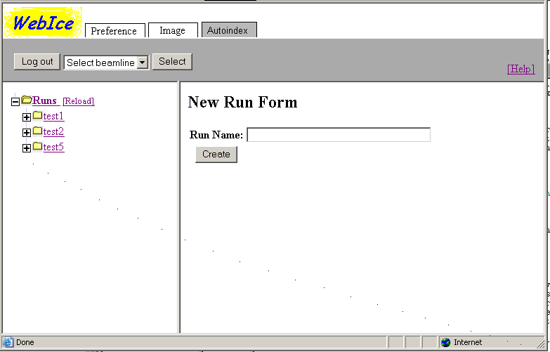
The user can delete an existing run by clicking the "delete" link for the desired run in the runs summary table. The link can be found in the "Commands" columns, which is the right most column of the table. All files and directories for this run will be deleted.
The user may select a particular run from the navigation tree in the left frame. All runs are listed as sub nodes of the "Runs" root node. Another way to select a run is by clicking a URL link associated with a run name in the first column of the runs summary table.
After a run has been selected, the run node in the navigation tree will be highlighted (with bold font) and the folder icon for this node will be displayed as opened. The right frame will display information about this run, including run setup, result summary, result details and predictions.
The right frame is further divided into two parts, top and bottom. The top part displays the type of the node and the node name. It also contains URL links that allow the user to select the type of information to be displayed in the bottom part of this frame. The tabs for a run node includes "[Setup]", "[Summary]", "[Details]" and "[Prediction]". The selected link is displayed in a bold font.
Once a run has been created, the user user uses the Setup page to setup input data and start the run. First, the user must select a node by following the instruction in the section above. The user then clicks on the "[Setup]" link at the top of the right frame. The bottom part of the frame will display a setup page for the run, as shown in the picture below:
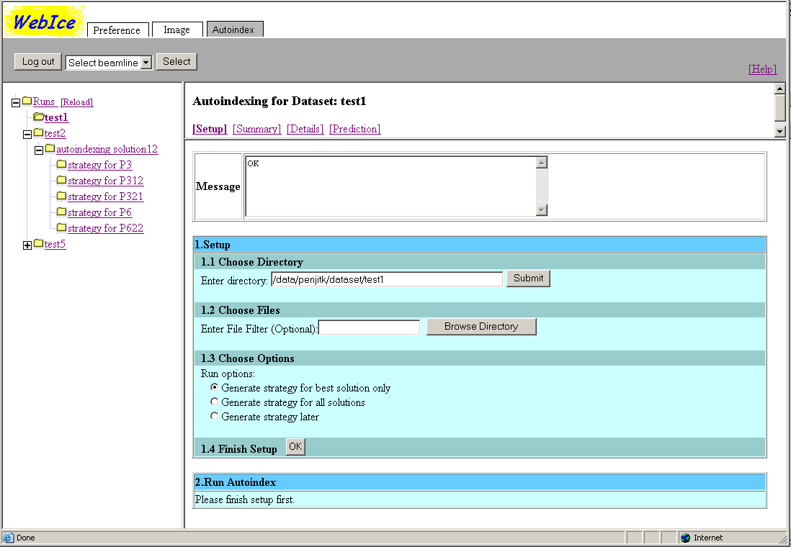
The message box at the top displays notification and error messages generated during the setup, run or loading of sub nodes. The user should always make sure that the message box displays "OK" before taking any further action.
Setup steps are listed in a numerical order under the message box. The first step is to setup input data for the run and the second step is to start running it. A "Run" Button in the second step will not appear until the setup is completed.
The user can follow step 1.1 - 1.4 to setup input data. First, the user enters an image directory in the text box in step 1.1 and then click "Submit". By default, /data/userid directory will be displayed in the text box.
Next, the user browses the directory and selects two images. A file filter can be used to reduce the number of files being listed in the file browser. When the user clicks "Browse Directory" button, the file browser will appear under the file filter text box. The file browser displays the selected directory (as in step 1.1) and a list of subdirectories and image files. Only files that match the file filter will be listed. The picture below shows the file browser.
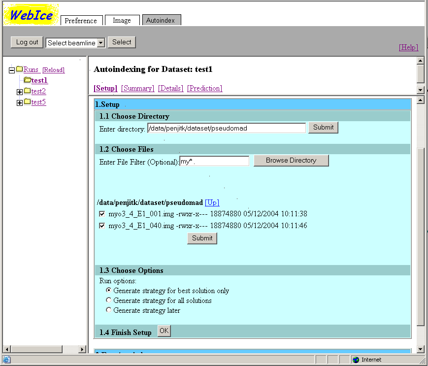
The user can go up and down the directory tree by using the file browser. The current directory will be updated and displayed in the image directory text box in step 1.1 as well. Note that when the user modify the text in the image directory text box and clicks the "Submit" button in step 1.1, the file browser will be closed. The user can reopen the file browser by clicking the "Browse Directory" in step 1.2.
After the user selects 2 images and clicks "Submit" at the bottom of the file browser, only the selected files will be displayed and the file browser will be closed, as shown in the picture below. Note that can reopen the file browser and reselect the files by clicking the "Browser Directory" button.
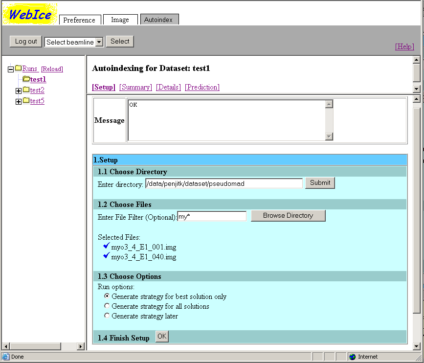
The user can now proceed to finish the setup by clicking the "OK" button in step 1.4. The run options in step 1.3 are currently only not functioning. Only the "Create strategy for best solutions only." run option will be used. In the future, the user will be able to select the other options. There will also be more parameters that the user can modify such as beam center.
After the user clicks the "OK" button in step 1.4, the setup is completed. See the picture below. At this point, the user will not be able to modify the image directory, files or run options, unless he clicks the "Edit" button. The setup data is saved to a file in /data/userid/webice/strategy/Runs/runname/autoindex.xml, where userid is the user login and run name is the name of the run.
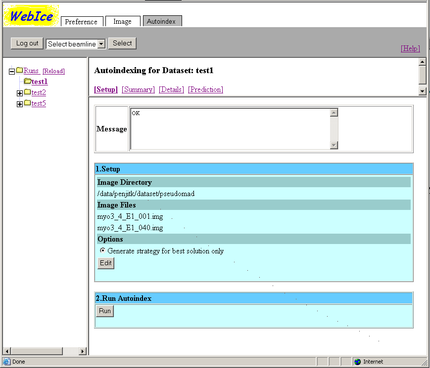
In step 2, the "Run" button now becomes available. Run starts in a new thread when the user clicks this button. The user will be able to perform other actions on WebIce while the autoindexing process of this node is running. Notice that the "Edit" button in step 1 disappear while the processing is running.
While the autoindexing is running, the user will see an animated icon. The user may choose to abort the run by clicking an "Abort" button displayed in step 2. The autoindexing process consists of many small steps running sequentially. The "Abort" button only cancels the steps which have not yet been executed. The step which is being executed can not be aborted and will carry on until it finishes. The amount of time the process takes to stop will vary depending on which step is being executed at the time of the abortion.
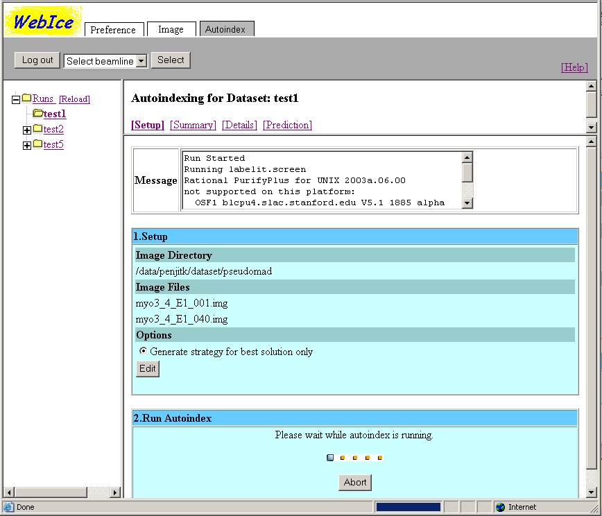
When the autoindexing is completed, the user will see a message "Done" displayed in step 2 as shown below. At the point, if the user clicks the "Edit" button in step 1, WebIce will ask the user to confirm this action. If the user decides to proceed, the result files and subdirectories for this run will be deleted before the user can modify the setup. This is to ensure the consistency between the setup data and the results.
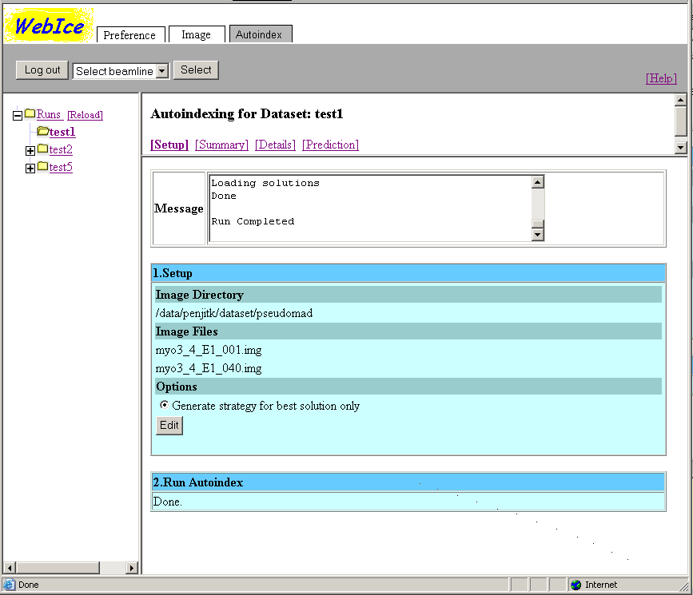
After the autoindexing process is completed, the user will be able to see results of the run by clicking the "[Summary]" link at the top of the right frame. The result is generated by a program called labelit developed by Nick Sauter of LBL. See http://cci.lbl.gov/labelit web site for details.
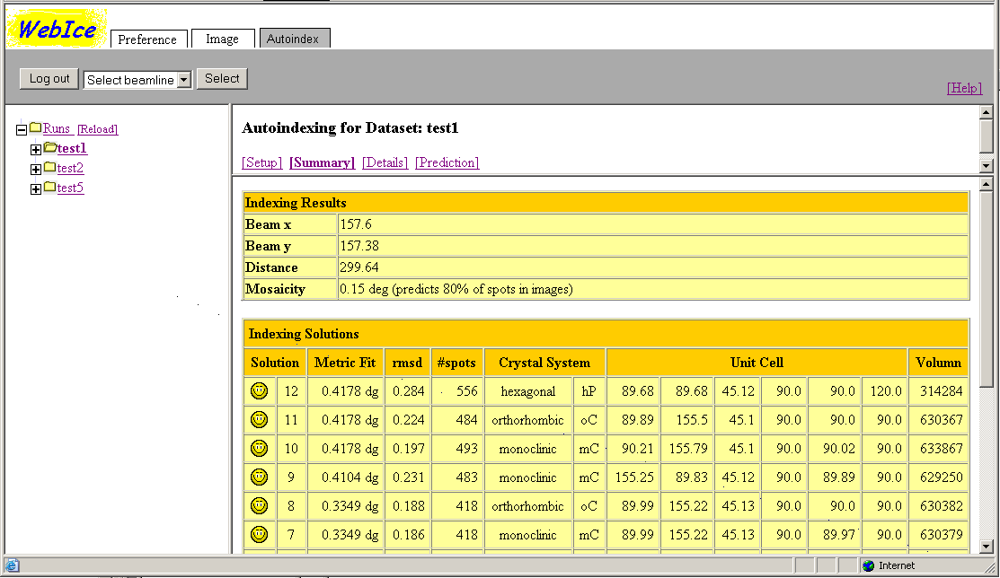
Summary is displayed in three separate tables with the following headers: Indexing Results, Indexing Solutions, and Integration Results. A full view of the tables is shown the the picture below.
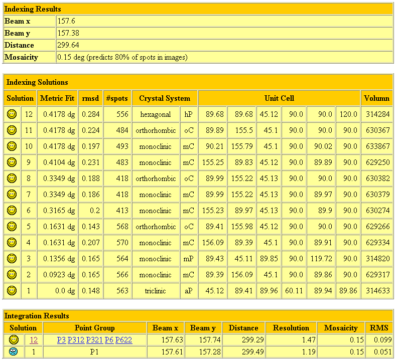
The following paragraphs in italic are excerpts from http://cci.lbl.gov/labelit web site that describe the results in the tables (with few modifications since the example mentioned in the text is different from the one used in this document).
Each image is first analyzed to select bright well-shaped Bragg spots. A maximum of 300 are chosen from each image to use for autoindexing; for a total of 600. If fewer than 40 good spots are found on either image, no indexing is attempted. After autoindexing the lattice is analyzed to correct the beam center. If a correction of >1mm is required, a message is printed, and the data are re-examined with the new beam center:
Once a lattice basis has been chosen, the following twelve parameters are refined by the conjugate-gradient method: beam x&y, detector distance, and the xyz components of each basis vector. No symmetry is present at this stage. Furthermore, mosaicity values are sampled at 0.05° increments to determine the best value which can successfully model 80% of the 600 spots chosen for indexing. If no mosaicity value less than 1.5° works, we relax the requirements and try to model 60% of the spots. However, it is usually indicative of a poor diffraction pattern. As currently implemented, the program does not account for detector tilt or non-zero two-theta angle.
The results of parameter refinement are displayed in the Indexing Result table.
Each of these Bravais choices is subjected to further parameter refinement with the added unit cell restraints arising from symmetry. The rmsd column here is the root mean squared deviation of observed vs. modeled spot positions given in mm, while the #spots gives the number of Bragg spots correctly predicted by the model. The maximum possible value is always 600 (the same spots that went in to indexing). The model never predicts 100% of observed spots correctly because spots near the spindle are discounted. Note that the refined unit_cell parameters are given in Å and degrees, while the unit cell volume is given in cubic Å.
The highest numbered smiley face is LABELIT's best guess, based on the rmsd value.
Next we attempt to detect metric symmetry as described in the paper. At this stage, Bravais symmetry is only a hypothesis, so a list is produced with all possible Bravais types consistent with the basis vectors within an angular tolerance of 1.4°. Solutions are listed in order of decreasing angular distortion, listed in the Metric fit column, in degrees.
This result is displayed in the Indexing Solution table in the above picture.
The Solution column corresponds to the Solution number in the Indexing Results table. The Space Group is the simplest group within this Bravais setting. Beam x & y, distance, and Mosaicity are further-refined values from MOSFLM. RMS is the root mean squared spot deviation in mm, and is invariably lower than that reported in the first table because MOSFLM's model is more sophisticated than that of LABELIT. The Resolution is derived from an analysis of the integrated but unmerged spot output from MOSFLM. The value reported is the resolution limit where the average I/sigma drops below 0.75. Values are extrapolated from a log plot if the crystal diffracts past the image edge.
The integration results from the triclinic setting are always reported, as are the results from the best-guess smiley face setting from the Indexing Results table. RMS values are compared for these two settings. In this case hP gives 0.099 mm, while aP gives 0.051mm, so the hexagonal-P is awarded a second smiley face. If the top solution has an RMS more than twice the triclinic setting, it is still listed, but further integrations are done, proceeding down the solution list until one is found with a reasonable RMS.
The user can click a URL link in the integration results table to view more details of a particular indexing solution or strategy for a particular space group. As shown in the picture above, the user will be able to click "12" to look at the integration statistics for solution 12, or click "P3", "P312", "P321", "P6" or "P622"to view the strategy calculation results for each space group.
In the event that the user wants to do further analysis with MOSFLM, appropriate control files are provided. Hyperlinks are provided to download unix scripts for controlling interactive MOSFLM sessions. A different script is provided for each of the numbered Bravais solutions. For the example above, scripts integration01.csh and integration02.csh are generated. Parameters given in the mosflm input files represent the model as presented in the "LABELIT Indexing" table described above. Mosaicity is the 80% value. Resolution is the limiting value given for the :) solution from the "MOSFLM Integration" table. X-ray source parameters such as polarization, dispersion and divergence are dummy values are appropriate for the Advanced Light Source, but which may require modification if the data were collected at other sources.
Running any of these scripts starts an interactive MOSFLM session. The user may then re-estimate the mosaicity, alter parameters if desired, post-refine the model, and integrate the dataset.
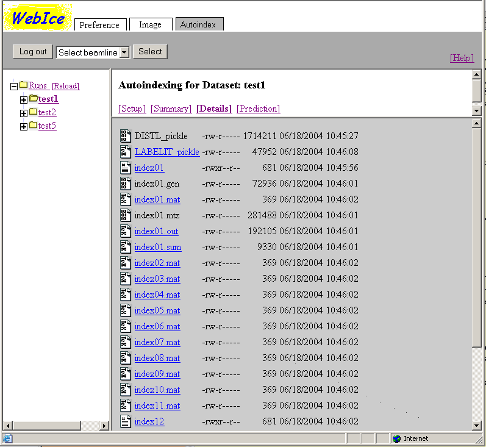
WebIce uses LABELIT to generate JPEG images to visually summarize the results of autoindexing. One image shows Candidate Bragg spots detected by DISTL program, and other image shows predicted Brag spots using using LABELIT model for the best-guess Bravais setting.
To view these images, the user clicks on the "Prediction" tab in the right frame after selecting a desired run as shown in the picture below. The user can select one of the two images from the drop down menu and select a type of image from "Show observed spots" or "Show calculated spots" radio buttons. The display size can be adjusted by entering a width in pixel (defaulted to 700x700 pixels). The image will appear after the user clicks the show button.
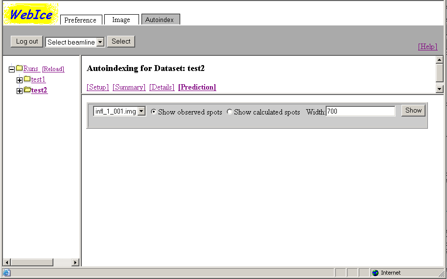
Candidate Bragg spots chosen in the initial step prior to indexing (results produced by the program DISTL from SSRL). Candidate spots are depicted in blue color. An additional overlay of bright green indicates the subset of up to 300 brightest spots actually used for indexing. An open circle near the center outlines the input beam position.
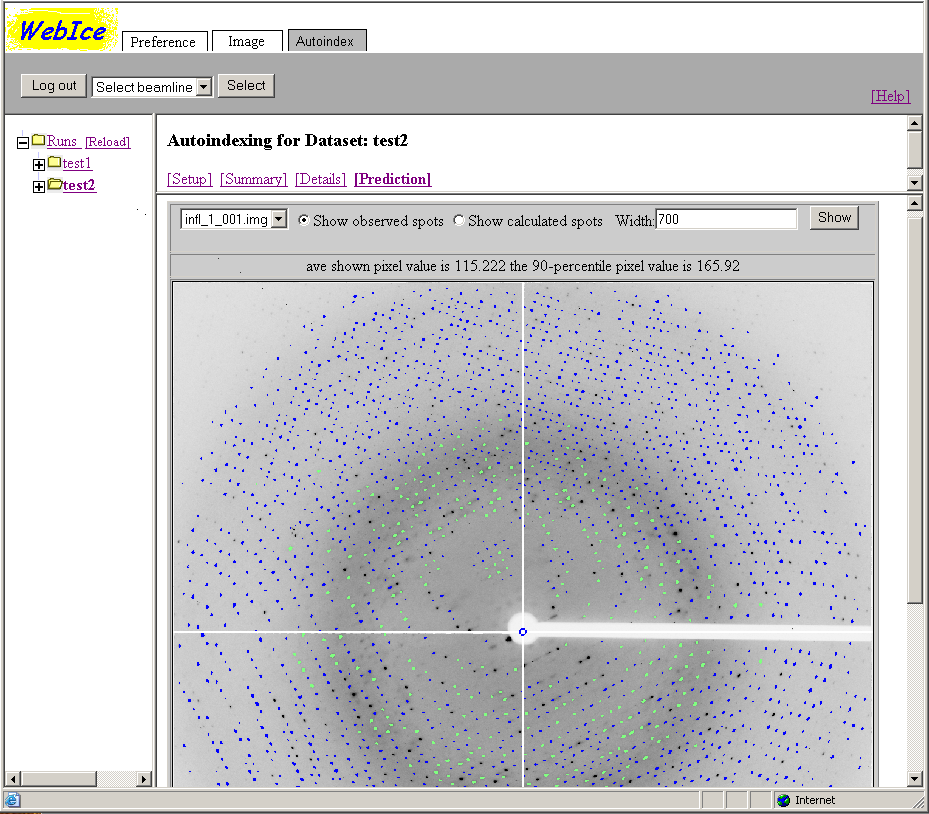
LABELIT model for the best-guess Bravais setting. Open circles show predicted Bragg spot positions from the refined model (fulls are purple, partials are yellow). A red cross indicates the refined beam position. The model is truncated at the resolution limit reported in the MOSFLM result table.
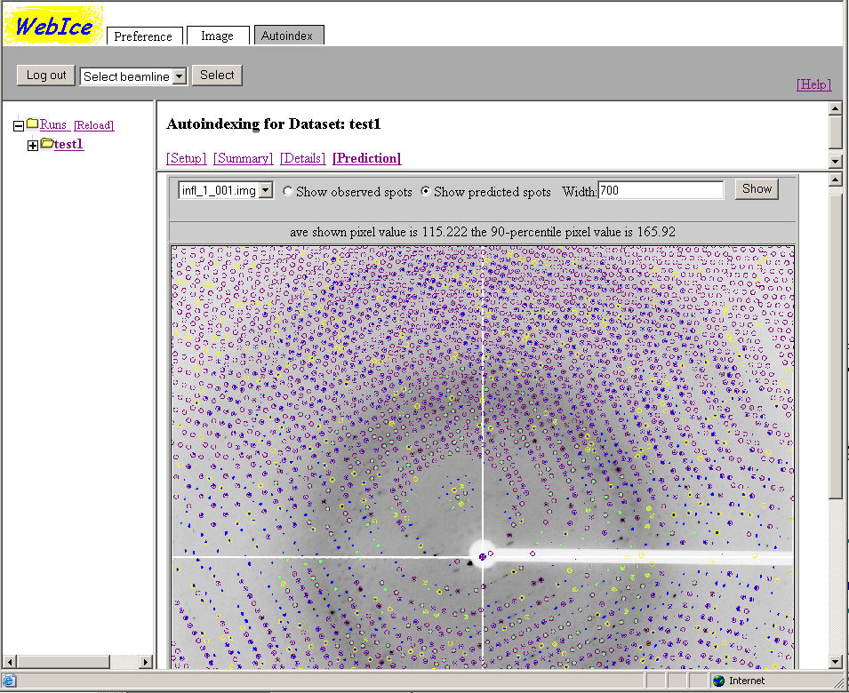
This is available in the new version of LABELIT which is not yet supported by WebIce.
MOSFLM model. Circles show the position of integrated Bragg spots output from MOSFLM (fulls are purple, partials are yellow), while a purple cross shows the MOSFLM-refined beam position.
The image integrations results can be displayed by clicking on the + sign next to the run name on the side navigation bar and selecting the solution number or by clicking on the solution number in the run summary view.
The setup window lists all the space groups (point groups) consistent with the selected autoindex solution. If the strategy has been determined for this solution (specified in the run setup), clicking on the space group name will display the strategy results.
The summary displays the spot profile and the I/sigmaI statistics for each of the images used in the autoindexing.
The mosflm script, matrix file and detailed output files generated for the selected autoindexing solution can be viewed under the autoindexing solution details
After autoindexing and integrating the images, MOSFLM is used to calculate the data collection strategy. The strategy results can be accessed by clicking on the space group names under the autoindexing or integration results, or from the side navigation bar, under the autoindexing solution.
Two different data collection strategies are calculated. The first calculation determines the minimum oscillation angle required to maximize the unique data completeness and the second one, the oscillation angle maximizing the anomalous pair completeness. The first two windows in the summary show the angular range, the maximum completeness achieved to the resolution limit determined by LABELIT and the orientation of the crystal with respect to the oscillation axis. The "show statistics" link, displays the data completeness as a function of the resolution.
After calculating these ranges, the MOSFLM testgen option is used to determine the oscillation per frame that results in a maximum of 3% overlapped reflections. This is done over the total angle range that optimizes both the unique and anomalous completeness.
The mosflm scripts used for these calculations are shown in the strategy details.